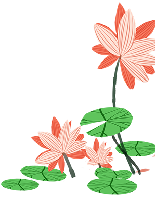
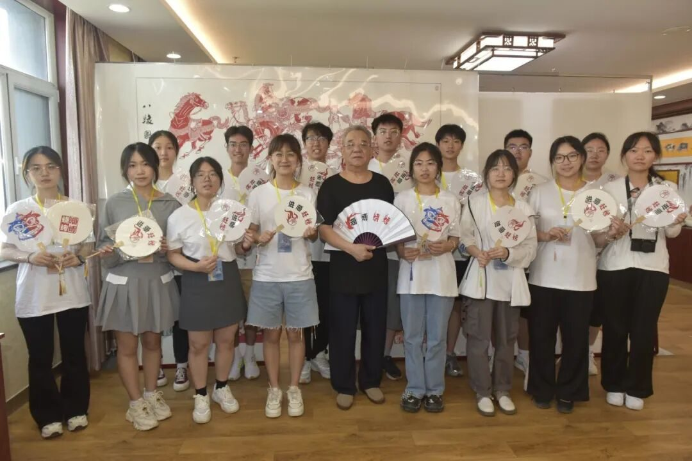
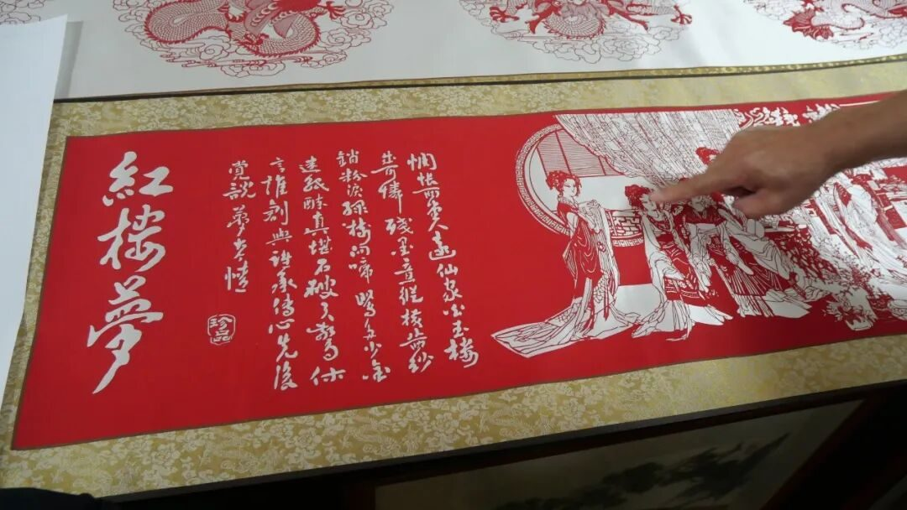
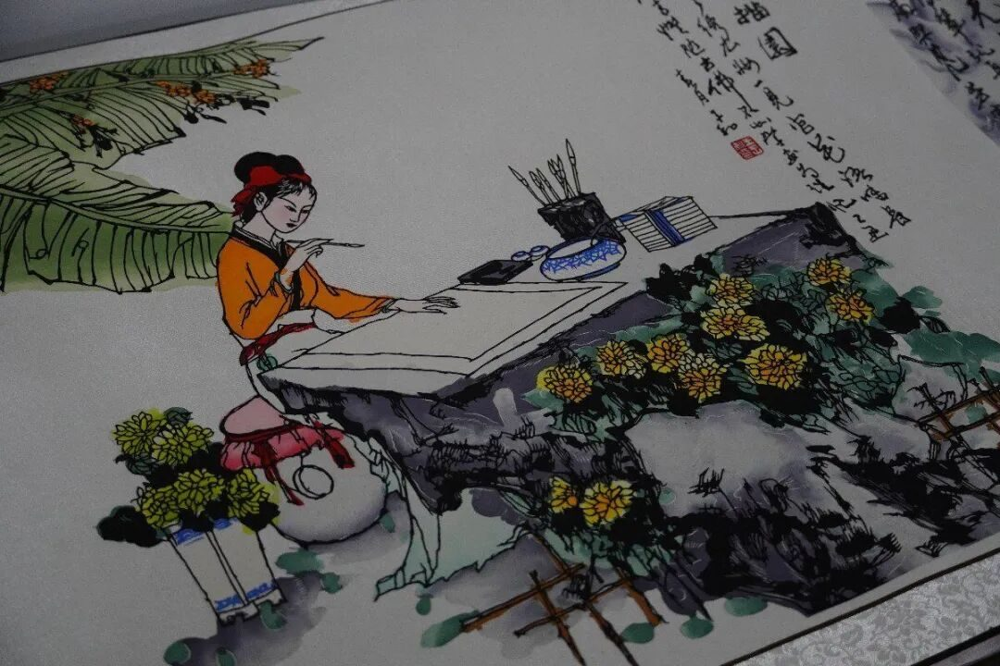
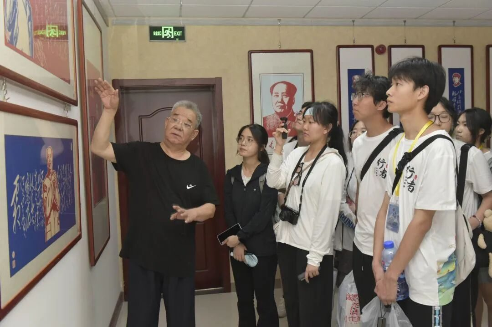
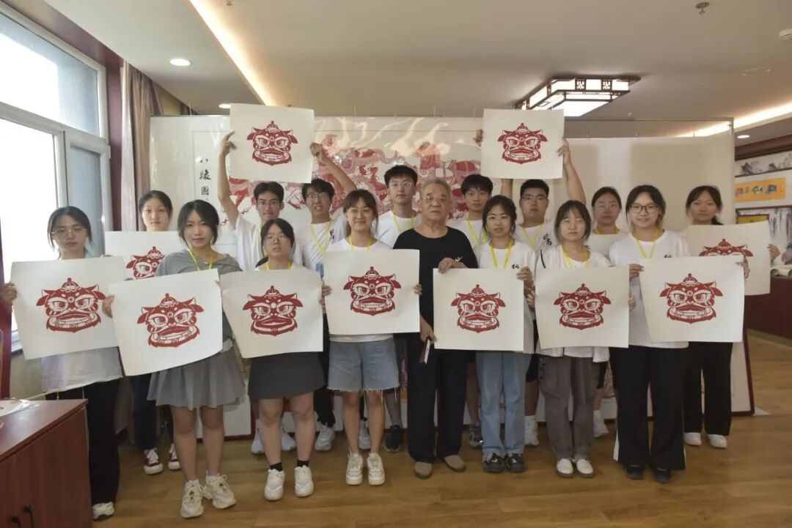

素纸承新生，刀刻定乾坤

刀刻乾坤
纸上生花

实践第四天，赶着“淄博”的热度，行者们踏上这片齐国故都开启了非遗文化之旅，并且邀请到淄博刻纸传承人王涛老师和朱孝杭老师来介绍、分享他们的“工匠”故事。

王涛老师
面迎朝露，我们抵达了王涛老师的工作室。作为一名刻纸艺术非遗传承人，王涛老师十分亲近、热情的为我们展示他的各幅刻纸作品，首先映入眼帘的就是红楼梦画卷和清明上河图，我们用手轻轻触摸，摸出了层层刻纸的重叠，它们仿佛历史的更迭般，立体形象的将宋朝、清朝的历史故事展现在我们眼前。


王涛老师拿出头戴式的放大镜让我们近距离仔细观察他的“千里江山图”，在放大镜下，我们看到了由深至浅、又远及近的流水与古树，它们的线条被老师勾勒的十分流畅，让我们体会到：刻纸艺术家创作的时候越细腻精致，创造出的作品也就越灵动逼真。
之后，我们对王涛老师进行的专访。王涛老师热情的拿出一幅又一副作品供我们欣赏和学习，同时也为我们展开讲解：颜料是用唐卡的染料来达到流畅、真实的效果，书法字体也是提前用铅笔描摹、勾勒好的。在采访的过程中，王涛老师的眼睛不时的落在自己的作品上停留片刻，这也许就是一种“工匠精神”：因热爱而创作，因信念而钻研，因梦想而传承。在他的描述中，这些刻纸作品早已不是几行数字能够衡量和购买的，而是几个月甚至几年的细心创作所凝聚的文化精华、文化魂魄。
朱孝杭老师
下午，行者们来到了朱孝杭老师的工作室。在这里，我们发现，朱老师的多数作品都以“红色”为主题，展现中华民族的璀璨历史，展现各位值得纪念的历史英雄人物等等。

接下来，朱孝杭老师根据学校的吉祥物印出的刻纸图案供行者们亲身体验，在这两个小时里，我们安静潜心刻纸，在朱孝杭老师的带领下努力用标准的创作手法来进行自己的创作，多名同学刻出了雄狮图案、蝴蝶图案。同时，我们的团队也派出代表接受了电视台的采访，身为大工学子，我们很荣幸能够将自己对非遗文化的理解和认识通过亲身实践的方式娓娓道来，这个下午，也让我们的团队活动得到了升华。
在结束时，我们举起自己的作品、朱老师赠送的团扇进行了合影留念。

通过这一天对淄博刻纸文化的深入探访研究，行者们感叹中华传统文化的璀璨与绚烂，而仅仅是这一种刻纸艺术，就有多种表现手法和创作理念，可见非遗文化所蕴藏的奥秘是值得不停被挖掘、学习和发扬的。


来源 | 行者无疆实践团
图片 | 孙琦崴 郝钧宇 郭知钰
文字 | 郭知钰
排版 | 孙琦崴
审核 | 崔雨琪 杨婧葳